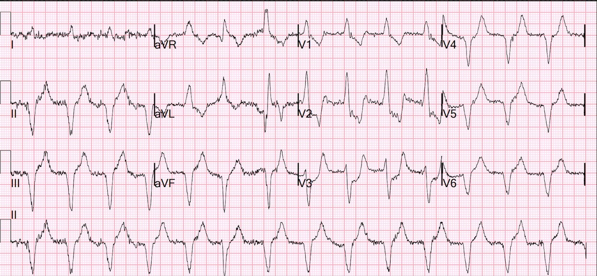
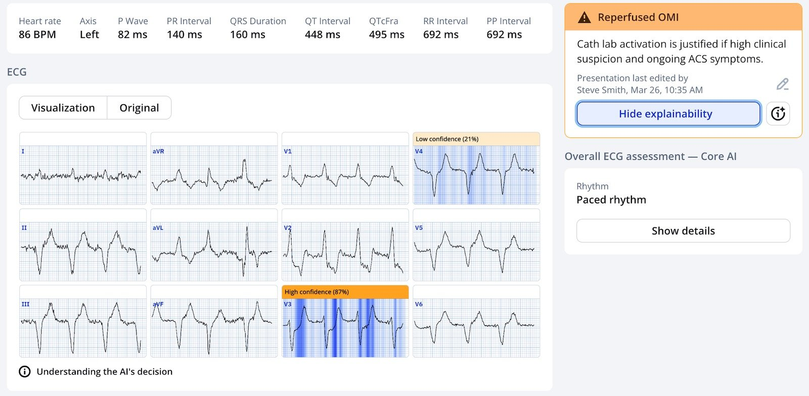
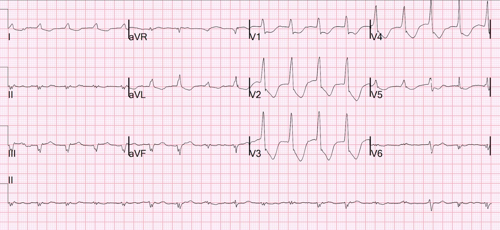
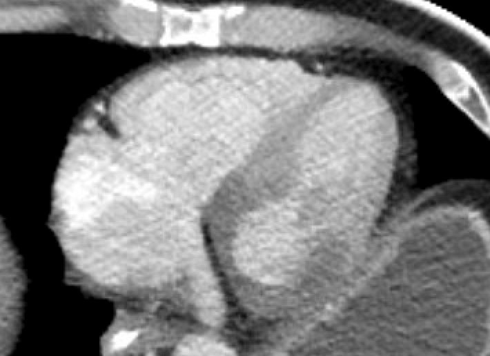
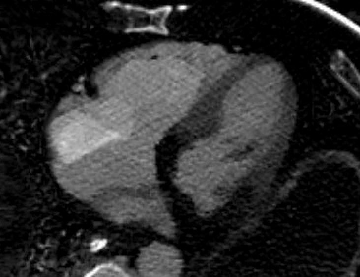
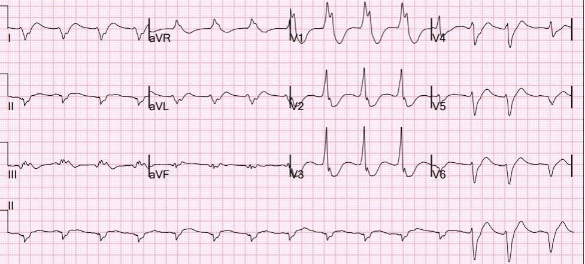
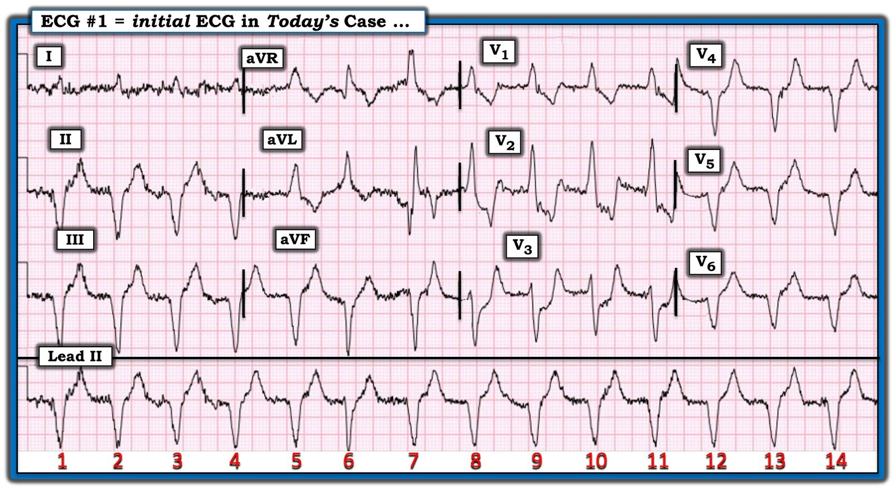
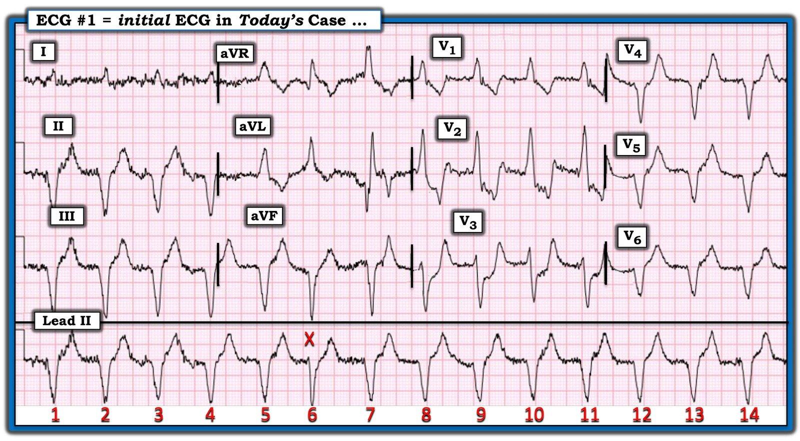
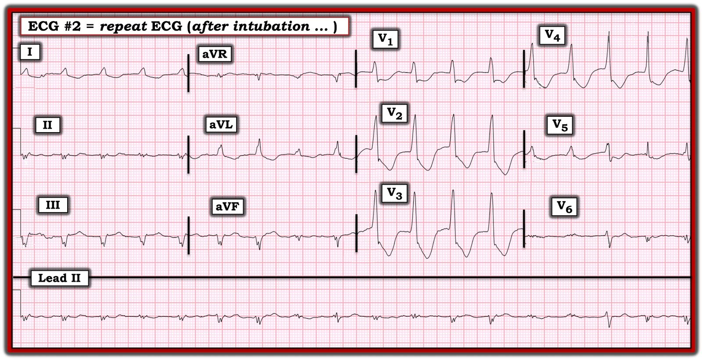
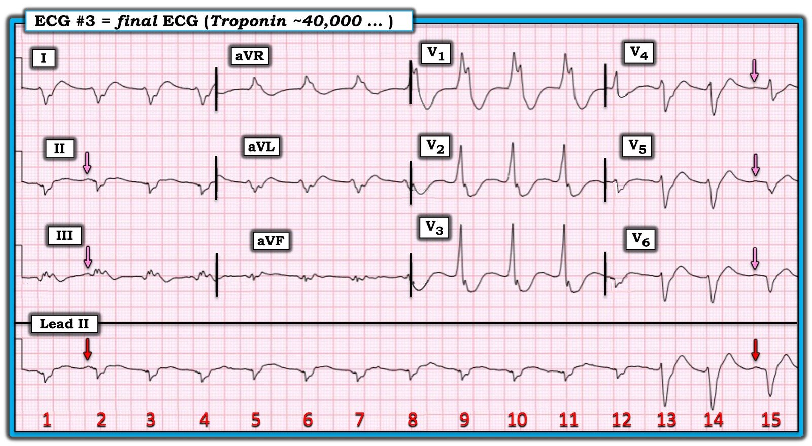

06/04/2025 — Không đáp ứng và nhiễm toan: OMI? Cấp, bán cấp hay đã tái tưới máu? Nhịp là gì? Vì sao rối loạn chức năng thất phải? Chụp CT có giúp được không?
Bản dịch tiếng Việt của bài "Unresponsive and Acidotic: OMI? Acute, subacute, or reperfused? What is the rhythm? Why RV dysfunction? Can CT scan help?" – Dr. Smith’s ECG Blog. Giữ nguyên toàn bộ 10 hình ảnh của bản gốc.
Bài này do một trong những bác sĩ nội trú năm thứ 3 rất giỏi của chúng tôi, Katie Buerk, viết.
= = =
Ca bệnh là một nam giới 69 tuổi, được xe cứu thương đưa đến sau khi gia đình phát hiện ông nằm trên giường, không đáp ứng, vào đầu ngày hôm đó. Lần cuối
ông được nhìn thấy là 3-7 ngày trước. Khi nhân viên cấp cứu ngoài viện tiếp cận, ông có nhịp chậm khoảng 20-30 lần/phút. Họ không đo được huyết áp.
- Khi đến khoa cấp cứu (ED), ông tự thở, mạch yếu và sờ thấy lạnh. Tần số tim chỉ khoảng hơn 20 lần/phút và chúng tôi cũng không đo được huyết áp.
- Nhiệt độ của ông là 32.8 °C.
- Siêu âm tại giường (POCUS) nhanh cho thấy phân suất tống máu giảm đáng kể và lác đác vài đường B. Ông được tiêm 50 mcg epinephrine, đáp ứng tốt cả về tần số tim lẫn huyết áp.
- Nhịp trên monitor theo dõi từ xa (telemetry) có vẻ là nhịp chậm xoang hoặc nhịp bộ nối. Monitor cũng cho thấy có thể có ST chênh lên và sóng T nhọn, nên ông được cho 2 g calci gluconat theo kinh nghiệm.


= = =
Bạn nghĩ gì?
= = =
Có một nhịp QRS rộng, đều, không có sóng P, tần số dưới 100. Như vậy, đây có thể là nhịp bộ nối, nhưng nhiều khả năng hơn hẳn là nhịp tự thất gia tốc (AIVR). AIVR thường là một nhịp tái tưới máu. AIVR này có hình dạng RBBB; do đó, nó xuất phát từ thất trái (LV). Cũng có trục lệch trái; do đó nó xuất phát từ vùng dưới của thất trái. Đoạn ST trong AIVR có thể được phân tích tương tự như trong LBBB (ST chênh lên hoặc chênh xuống ngược hướng quá mức / STE hoặc STD đồng hướng).
- Trong ca này, có STD ngược hướng quá mức ở V2 và STD đồng hướng ở V3. Do đó, nó có giá trị chẩn đoán OMI thành sau.
- AIVR gợi ý rằng đây là OMI thành sau đã tái tưới máu, và điều đó chắc chắn là có thể, nhưng tôi nghĩ phải giả định rằng nó vẫn đang diễn ra cho đến khi chứng minh được điều ngược lại.
= = =
Mô hình AI PMCardio Queen of Hearts cho rằng đây là OMI đã tái tưới máu:


= = =
Ca bệnh tiếp diễn:
Điện tâm đồ ban đầu cho thấy ST chênh xuống ở V1-V4, đáng lo ngại OMI thành sau. Đã mời hội chẩn tim mạch.
- Tần số tim của ông đã cải thiện lên khoảng 80 lần/phút sau khi dùng epinephrine.
- Sau đó, ông ngày càng chậm nhịp và được ghi nhận có các cử động giật cơ (myoclonus). Lúc đó, ông mất mạch và ở tình trạng vô tâm thu trên monitor.
- Bắt đầu hồi sinh tim phổi (CPR) và ông được làm 1 vòng ACLS (CPR + 1 mg epi). Trong lúc CPR, ông bắt đầu tự cử động cả tứ chi.
- Ở lần kiểm tra mạch đầu tiên, đạt được tái lập tuần hoàn tự nhiên (ROSC). Chúng tôi tiến hành đặt nội khí quản với ketamine và rocuronium. Ông được cho 2 ống bicarbonat theo kinh nghiệm trước khi đặt nội khí quản vì lo ngại nhiễm toan nặng. Bắt đầu norepinephrine sau đặt nội khí quản vì tụt huyết áp kéo dài.
= = =
Sau đặt nội khí quản, chúng tôi ghi được điện tâm đồ sau:


Bản này vẫn cho thấy AIVR với ST chênh xuống ngược hướng quá mức ở V1-V4.
= = =
Các xét nghiệm ban đầu của ông có kết quả:
- Đáng chú ý: pH 7.01, bicarbonat 10 và pCO2 41.
- Lactat là 22.
- Khí máu cho thấy nhiễm toan chuyển hóa nặng, chủ yếu do lactat, với bù trừ hô hấp không đủ.
- Ghi nhận glucose 591 và khoảng trống anion 30.
- Kali là 3.7.
Ông được bù kali, được cho 300 mg ASA đặt trực tràng,
và được chỉ định truyền insulin liên tục. Ông được tăng thông khí với tần số 28 để bù trừ phần nào cho nhiễm toan chuyển hóa.
- Bệnh nhân liên tục nhịp chậm, cần 2 x 50 mcg epinephrine để duy trì tần số tim >60.
- Bắt đầu truyền epinephrine liên tục và ngừng norepinephrine.
- Ông được cho vancomycin và cefepime theo kinh nghiệm, dù nhìn chung chúng tôi ít nghĩ nhiễm khuẩn huyết là căn nguyên của bệnh cảnh này.
= = =
Lúc này, đã có nhiều cuộc thảo luận với nhóm tim mạch, những người đang cân nhắc có đưa bệnh nhân này vào phòng thông tim (cath lab) hay không. Họ cho rằng ngừng tim dạng vô tâm thu gợi ý một căn nguyên ngừng tim khác.
- Với tình trạng nhiễm toan nặng và không có ST chênh lên, họ cho rằng nhiều khả năng bệnh cảnh có căn nguyên ngoài tim.
- Phòng thông tim chưa được kích hoạt, vì vậy ông được đưa đi chụp CT sọ não và chụp CT mạch ngực/bụng/chậu để loại trừ các nguyên nhân ngừng tim khác.
CT không cho thấy thuyên tắc phổi hay bệnh lý trong ổ bụng — nhưng lại cho thấy hình này:


Bạn có thấy vùng tối ở phía dưới hình không? Đây là thành sau và không có thuốc cản quang tưới vào thành sau đó.
- Đó là thiếu máu cục bộ xuyên thành của nhồi máu cơ tim do tắc (OMI).
= = =


Hình CT phổ này thật sự làm nổi bật vùng thiếu máu cục bộ xuyên thành đậm đặc ở thành sau.
- Ở đây bạn cũng có thể thấy có thiếu máu cục bộ đậm đặc ở thất phải (RV).
- CT cho thấy giảm tưới máu thành thất phải và thành sau, cũng như vôi hóa đáng kể ở LAD. Không có dấu hiệu hình ảnh nào khác giải thích được bệnh cảnh của ông.
= = =
Điện tâm đồ thứ ba, ghi 100 phút sau bản đầu tiên:


Diễn giải vẫn như trước: AIVR với ST chênh xuống ngược hướng quá mức.
= = =
Troponin ban đầu có kết quả là 42,747 ng/L.
- Troponin ban đầu rất cao này cho chúng ta biết nhồi máu đã ở giai đoạn bán cấp và phần lớn, hoặc gần hết, tổn thương đã xảy ra rồi.
- Bệnh nhân được đưa vào phòng thông tim tương đối nhanh, lúc 160 phút sau khi đến viện. Ông được cho thêm 300 mg aspirin đặt trực tràng và tiêm bolus 5000 đơn vị heparin tại khoa cấp cứu.
= = =
Chụp mạch vành:
- Nhánh chéo thứ nhất bị tắc
- RCA: bệnh đoạn xa 95% với tắc hoàn toàn nhánh nhĩ thất sau phải (RPAV), mạch nhỏ và không có lựa chọn PCI cho RCA hay RPAV; động mạch liên thất sau phải (RPDA) bệnh lan tỏa nặng, mạch nhỏ.
- Nhánh trung gian (ramus): mạch nhỏ, bệnh lan tỏa nặng
Không có khả năng PCI/đặt stent
= = =
Siêu âm tim:
- Giảm chức năng tâm thu thất trái mức độ nhẹ đến vừa.
- Phân suất tống máu thất trái ước tính 40-45%.
- Có thể giảm động thành trước và thành trước bên.
- Giãn thất phải.
- Giảm chức năng tâm thu thất phải.
= = =
Đánh giá:
- Bác sĩ tim mạch cho rằng đây là sốc tim do rối loạn chức năng thất phải.
Bình luận của Smith: Thất phải thiếu máu cục bộ rất nặng trên CT và rối loạn chức năng trên siêu âm tim, và điều này quả thực giải thích được tình trạng sốc. Nhưng tôi không chắc làm sao giải thích được thiếu máu cục bộ thất phải dựa trên điện tâm đồ hay chụp mạch vành. Không có thuyên tắc phổi.
= = =
Ca bệnh tiếp diễn:
- Diễn tiến sau thông tim rất phức tạp với sốc tim và rối loạn nhịp nặng, cuối cùng đã được kiểm soát, nhưng bệnh nhân không hồi phục về thần kinh.
= = =
======================================
BÌNH LUẬN CỦA TÔI, bởi KEN GRAUER, MD (6/4/2025 — Cập nhật cho WordPress ngày 15/2/2025):
Như Dr. Smith đã bàn ở trên — bệnh nhân trong ca hôm nay đã không qua khỏi. Ca bệnh của ông phức tạp do không đáp ứng với các nỗ lực điều trị tích cực (như Dr. Smith đã mô tả ở trên).
- Tôi tập trung bình luận vào chuỗi 3 điện tâm đồ được ghi trong ca này, mỗi bản đều cực kỳ khó — nhưng lại minh họa phong phú những nguyên tắc quan trọng để đọc các bản ghi khó ở một bệnh nhân nguy kịch.
= = =
Tóm lại: Ca hôm nay là một nam giới 69 tuổi, được gia đình phát hiện nằm trên giường, không đáp ứng. Vì lần cuối bệnh nhân được nhìn thấy là “3 đến 7 ngày trước” — nhiều khả năng ông đã ở trong tình trạng nguy kịch (như ghi nhận lúc đến khoa cấp cứu) trong một khoảng thời gian kéo dài.
- Khi đến khoa cấp cứu — ông tự thở, nhưng hạ thân nhiệt, nhịp chậm rõ rệt và không đo được huyết áp. Nói ngắn gọn — khả năng có kết cục tốt là rất dè dặt.
- Ban đầu, monitor theo dõi được đọc là nhịp chậm xoang hoặc nhịp bộ nối. Vì có sóng T nhọn — bệnh nhân đã được điều trị theo kinh nghiệm một cách phù hợp bằng calci tĩnh mạch (Không có dải nhịp nào của giai đoạn này).
- Kết quả K+ huyết thanh sau đó = 3.7 mEq/L (mà với tình trạng nhiễm toan nặng của bệnh nhân này — gợi ý K+ huyết thanh thực sự thấp hơn đáng kể so với 3.7).
- Bệnh nhân được làm ấm và điều trị bằng thuốc vận mạch — nhờ đó cải thiện được tần số tim và huyết áp.
= = =
Vào khoảng thời gian này — một điện tâm đồ ban đầu đã được ghi (mà tôi đã tái hiện trong Hình 1).
- Ghi chú của bác sĩ lâm sàng về diễn giải bản ghi này là, “Điện tâm đồ ban đầu cho thấy ST chênh xuống ở V1-V4, đáng lo ngại OMI thành sau. Đã kích hoạt Tim mạch theo Quy trình B (Pathway B)”.
= = =
CÂU HỎI:
- BẠN đã đọc điện tâm đồ ban đầu trong ca hôm nay như thế nào?
- Hãy NHÌN lại bản ghi này. Bạn có đồng ý với ghi chú diễn giải của bác sĩ lâm sàng không?
= = =
Hình 1: Điện tâm đồ 12 chuyển đạo ban đầu ghi tại khoa cấp cứu.


= = =
SUY NGHĨ CỦA TÔI về điện tâm đồ #1:
Xin nhấn mạnh — các bác sĩ lâm sàng đã nghi ngờ tăng kali máu một cách hợp lý, và điều trị cho bệnh nhân bằng calci tĩnh mạch. Nhưng K+ huyết thanh không tăng (tức là, giá trị xét nghiệm trả về = 3.7 mE/L có lẽ đã bị tăng giả do tình trạng nhiễm toan nặng nền).
- Tôi hoàn toàn đồng ý rằng mối lo ngại ban đầu của chính tôi khi nghe ca này và nhìn điện tâm đồ ban đầu này — là QRS giãn rộng và sóng T nhọn, lớn thể hiện tăng kali máu. Nhưng bệnh nhân này không bị tăng kali máu!
- Tôi cũng hoàn toàn đồng ý rằng có vẻ như ngoài RBBB — còn có ST chênh xuống quá mức ở các chuyển đạo trước V2,V3 của Hình 1 — mà trong bối cảnh lâm sàng này sẽ gợi ý khả năng một OMI thành sau diện rộng, đang diễn ra.
= = =
CÂU HỎI:
- BẠN đã đọc nhịp như thế nào?
= = =
= = =
SUY NGHĨ CỦA TÔI về nhịp trong điện tâm đồ #1:
Mặc dù người ta có thể dễ dàng nghĩ đến blốc hai phân nhánh ( = RBBB/LAHB) — Chúng ta không thấy sóng P.
- Có nhiễu đường nền rõ rệt trên điện tâm đồ ban đầu này — có lẽ do run hoặc rét run ở bệnh nhân hạ thân nhiệt này.
- Dù vậy, nhịp tổng thể trong Hình 1 khá đều — với QRS giãn rộng rõ ràng. Và mặc dù nhiễu rõ rệt làm khó việc đánh giá hoạt động nhĩ — tôi không thấy sóng P.
- Và mặc dù sóng R dương hoàn toàn ở chuyển đạo V1 có thể phù hợp với dẫn truyền kiểu RBBB — và trục lệch trái rõ có thể phù hợp với LAHB — việc hoàn toàn không có phức bộ ba pha ở V1 — và các phức bộ QS âm hoàn toàn ở mỗi chuyển đạo dưới đều chống lại việc nhịp này là nhịp trên thất!
- Ngoài ra — các phức bộ âm hoàn toàn (phức bộ QS) ở các chuyển đạo V4,V5,V6 hầu như không bao giờ gặp trong nhịp trên thất. Và dù tăng kali máu có thể làm giãn rộng QRS và làm mất sóng P (với nhịp xoang-thất) — K+ huyết thanh không tăng.
- ĐIỀU CỐT LÕI: Nhịp trong Hình 1 không phải nhịp trên thất. Thay vào đó — nhịp này là AIVR (nhịp tự thất gia tốc — Accelerated IdioVentricular Rhythm).
= = =
CÂU HỎI:
- BẠN có để ý nhát “X” ( = nhát #6) trong Hình 2?
= = =
= = =
TRẢ LỜI:
- Bằng chứng ủng hộ rằng nhịp trên điện tâm đồ ban đầu hôm nay là AIVR đến từ sự hiện diện của nhát “X” — vì: i) Nhát này đến sớm hơn dự kiến; — và, ii) Nhát #6 rõ ràng hẹp hơn tất cả các nhát khác trong Hình 2, với phần đi xuống của sóng S thẳng hơn (dốc hơn) nhiều — điều này gợi ý mạnh rằng nhát này là nhát trên thất (khác với 13 nhát rộng hơn còn lại trong bản ghi này — do đó phải là nhát thất).
Những điểm cần học: Tôi đã thấy những bác sĩ tim mạch và bác sĩ cấp cứu giỏi nhất bỏ qua việc đánh giá nhịp (do đó không nhận ra rằng nhịp họ đang nhìn không phải nhịp xoang thông thường).
- Cách TỐT NHẤT để không bỏ sót các mốc quan trọng của nhịp tim — là bắt đầu đọc mọi điện tâm đồ bạn gặp bằng cách dành 3-4 giây để “con mắt được huấn luyện” của bạn tập trung vào dải nhịp chuyển đạo II dài — nhằm bảo đảm có sóng P dương đứng trước mỗi QRS với khoảng PR cố định. Nếu bạn không thấy điều này — thì nhịp không phải nhịp xoang.
- Manh mối TỐT NHẤT cho căn nguyên của một nhịp khó mà phần lớn là đều — là tìm “chỗ ngắt” trong nhịp! Nhát #6 rõ ràng đến sớm hơn bất kỳ nhát nào khác trong Hình 2 — điều này phải “bắt” mắt bạn, và thôi thúc bạn xem kỹ hơn.
- T.B. (P.S.): Mặc dù điện tâm đồ #1 là AIVR — tôi hoàn toàn đồng ý với mối lo ngại của bác sĩ lâm sàng rằng lượng ST chênh xuống không tương xứng ở các chuyển đạo V2,V3 có thể thể hiện OMI thành sau cấp đang diễn ra — vì vậy bản ghi này một lần nữa minh họa rằng đôi khi, nhồi máu cấp có thể được gợi ý từ chính các nhát thất.
= = =
Hình 2: Tôi đã thêm một chữ “X” vào điện tâm đồ ban đầu hôm nay. Chữ “X” này chỉ điều gì?


= = =
Ca bệnh tiếp diễn:
Một thời gian sau trong quá trình xử trí ca hôm nay (tức là, sau một đợt vô tâm thu — mà bệnh nhân đã được hồi sức thành công) — một điện tâm đồ thứ 2 được ghi, mà tôi đã tái hiện trong Hình 3.
- Ghi chú của bác sĩ lâm sàng về diễn giải điện tâm đồ #2 là, “Điện tâm đồ này tiếp tục cho thấy ST chênh xuống ở các chuyển đạo V1 đến V4”.
= = =
CÂU HỎI:
- BẠN đã đọc điện tâm đồ ghi lại này trong Hình 3 như thế nào?
- Hãy NHÌN lại bản ghi này — và so sánh điện tâm đồ #2 này với điện tâm đồ #1 (đã trình bày trong Hình 2). Bạn có đồng ý với ghi chú diễn giải của bác sĩ lâm sàng về điện tâm đồ #2 không?
= = =
Hình 3: Điện tâm đồ ghi lại sau ROSC từ một đợt vô tâm thu.


= = =
SUY NGHĨ CỦA TÔI về điện tâm đồ #2:
Một trong những sơ suất phổ biến nhất mà tôi thấy lặp đi lặp lại ngay cả ở các bác sĩ tim mạch và bác sĩ cấp cứu giàu kinh nghiệm — là không so sánh các bản ghi liên tiếp theo kiểu chuyển đạo-với-chuyển đạo.
- So sánh điện tâm đồ #1 với điện tâm đồ #2 phải cho thấy: i) Điện thế QRS đã giảm mạnh ở điện tâm đồ #2 (đặc biệt ở các chuyển đạo chi); — ii) QRS rõ ràng hẹp hơn so với ở điện tâm đồ #1; — và, iii) Giờ đây QRS chủ yếu dương ở các chuyển đạo V4,V5 — trong khi QRS ở các chuyển đạo này âm hoàn toàn ở điện tâm đồ #1.
= = =
Những điểm cần học:
- Nếu ban đầu bạn không nhận ra điện tâm đồ #1 không phải nhịp trên thất — thì sự thay đổi rõ rệt về độ rộng và hình dạng QRS mà giờ chúng ta thấy ở điện tâm đồ #2 lẽ ra đã gợi ý cho bạn điều này.
- Điện thế rất nhỏ mà giờ chúng ta thấy trong nhịp trên thất ở điện tâm đồ #2 là một dấu hiệu tiên lượng xấu — mà trong ca hôm nay có lẽ thể hiện tình trạng “choáng” cơ tim với cung lượng tim giảm đáng kể.
- T.B. (P.S.): Tôi hoàn toàn thừa nhận rằng tôi không biết nhịp trong Hình 3 là gì. Tôi tin rằng các điểm nêu trên cho thấy đây là một nhịp trên thất — biểu hiện QRS giãn rộng phù hợp với dẫn truyền kiểu RBBB, nhưng không có sóng P nào mà tôi có thể thấy (với biên độ giảm nhiều đến mức tôi không biết liệu sóng P có hiện diện bằng cách nào đó hay không).
= = =
Ca bệnh tiếp diễn:
Một thời gian sau trong quá trình xử trí ca phức tạp hôm nay (tức là, sau nhiều can thiệp điều trị) — giá trị Troponin ~40,000 có vẻ đã thúc đẩy việc ghi điện tâm đồ thứ 3 (mà tôi đã tái hiện và đánh dấu trong Hình 4).
- Tôi không thấy bất kỳ ghi chú nào của bác sĩ lâm sàng về diễn giải điện tâm đồ #3.
= = =
CÂU HỎI:
- BẠN đã đọc điện tâm đồ thứ 3 mà tôi đã đánh dấu trong Hình 4 như thế nào?
- Nhịp là gì?
- GỢI Ý: Các mũi tên đang chỉ vào gì?
- Còn các nhát #13,14,15 thì sao?
= = =
Hình 4: Điện tâm đồ thứ 3 — ghi sau khi có kết quả Troponin ~40,000.


= = =
SUY NGHĨ CỦA TÔI về điện tâm đồ #3:
Tôi thấy hữu ích khi đọc điện tâm đồ #3 trong bối cảnh biết rằng bệnh nhân này trước đó đã ở cả nhịp AIVR (trong Hình 2), lẫn một nhịp trên thất không rõ căn nguyên (trong Hình 3).
- “Con mắt” của tôi ngay lập tức bị thu hút bởi các nhát #13,14,15 trên dải nhịp chuyển đạo II dài — vì hình dạng QRS của các nhát này rõ ràng khác với 12 nhát trước đó trong bản ghi này.
- Nhát #13 rõ ràng đến sớm hơn dự kiến — vì vậy điều này phải gợi ý cho chúng ta rằng có điều gì khác đang xảy ra.
- Tôi tin rằng lần đầu tiên chúng ta thấy một số sóng P (mũi tên ĐỎ trên chuyển đạo II dài). Xin nhấn mạnh rằng biên độ của hoạt động nhĩ này rất nhỏ — nhưng chúng ta thấy dấu hiệu hoạt động nhĩ tương tự ở các chuyển đạo ghi đồng thời II,III; và V4,V5,V6 (mũi tên HỒNG) — vì vậy tôi tin rằng đây quả thực là sóng P.
- Thêm bằng chứng ủng hộ rằng các mũi tên màu này đang đánh dấu hoạt động nhĩ — là hình dạng QRS của nhát #15 có tính chất trung gian giữa hình dạng QRS của 12 nhát đầu — và của các nhát #13,14.
- Bây giờ, mặc dù QRS trên chuyển đạo II dài trông không quá rộng ở 12 nhát đầu — chuyển đạo ghi đồng thời V1 cho chúng ta biết QRS của 12 nhát đầu này thực ra rất rộng!
- Và — việc sóng P xoang đầu tiên (mũi tên ĐỎ thứ 1 trên dải nhịp chuyển đạo II dài) có khoảng PR quá ngắn để kịp dẫn truyền trước nhát #2 — cho chúng ta biết nhịp của 12 nhát đầu phải là nhịp thất (tức là, AIVR).
- Bằng chứng ủng hộ giả định này là đúng đến từ khoảng PR dài hơn một chút trước nhát #15, đây là một nhát hỗn hợp giữa các nhát trên thất #13,14 — và AIVR mà chúng ta thấy ở 12 nhát đầu. Chính vì khoảng PR trước nhát #15 dài hơn khoảng PR trước nhát #2 — nên có đủ thời gian để sóng P này dẫn truyền qua một phần tâm thất (và nhờ đó tạo ra một nhát hỗn hợp).
- Lưu ý rằng trái ngược với AIVR mà chúng ta thấy ở Hình 2, trong đó có các phức bộ QS âm hoàn toàn ở các chuyển đạo V4,V5,V6 — lại có một sóng R khởi đầu nhỏ, nhưng-chắc-chắn-có-mặt trước các nhát #13,14 ở các chuyển đạo V4,V5,V6 — trong khi không có sóng R khởi đầu trước nhát #15 ở các chuyển đạo V5,V6.
= = =
Những điểm cần học:
- Như đã nêu — quá dễ bỏ sót những chi tiết tinh tế trong một nhịp phức tạp nếu bạn không đều đặn dành 3-4 giây “kỳ diệu” đó để “nhìn một cách có hiểu biết” vào từng nhát trên dải nhịp chuyển đạo dài (đánh giá hoạt động nhĩ — và tìm bất kỳ “chỗ ngắt” nào trong tính đều của nhịp).
- Bệnh nhân hôm nay bị sốc kéo dài. Dù tôi không tin rằng bất kỳ can thiệp bổ sung nào có thể cứu được bệnh nhân bất hạnh này — tình trạng AIVR kéo dài (đặc biệt nếu không được nhận ra) có thể làm tình trạng tụt huyết áp kéo dài nặng thêm.
= = =
= = =